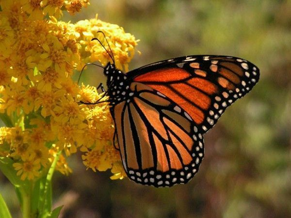
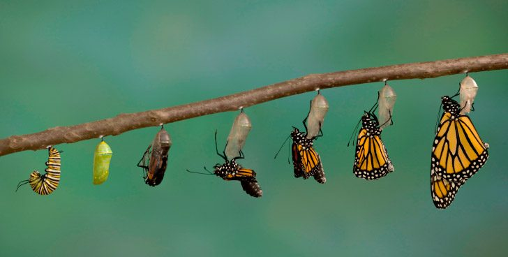

- Características de las mariposas
- Tamaño: 10 – 25 cm
- Clase: Insecta
- Orden: Lepidoptera
- Nombre científico: Danaus plexippus
- Número de especies: 150.000
- Peso: 0,25 – 0,75 gramos
- Longevidad: 12 meses
- Alimentación: Herbívoro
- Dieta: Néctar
- Reproducción Ovípara
- Distribución: Todo el planeta menos la Antártida
- Períodos de incubación: Varios días a meses
- Cómo nacen las mariposas
- Dónde viven las mariposas
- Qué comen las mariposas
- Qué colores tienen las mariposas
- Qué clasificación de las mariposas existe
- Los hespéridos o hesperíidos (Hesperiidae) son una familia de mariposas pequeñas y robustas que abarca más de 3.500 especies. Generalmente tienen colores poco vistosos con abundancia de grises, además de la cabeza grande y el tórax ensanchado. Otra característica por la que se diferencian de las demás familias es por sus antenas, que son muy separadas en la base y curvadas.
- Los licénidos (Lycaenidae) son una familia que comprende unas 6.000 especies, casi el 40% de las especies de mariposas diurnas conocidas. Son de pequeña envergadura y la cara superior es frecuentemente de colores brillantes, mientras que la inferior es de colores crípticos.
- Los ninfálidos (Nymphalidae) son una familia de mariposas de tamaño mediano, aunque algunas especies son de tamaño relativamente grande y presentan coloraciones brillantes. Tienen su par de patas delanteras más cortas que las otras dos.
- Los piéridos (Pieridae) son una extensa familia con varios géneros y miles de especies. La mayoría son mariposas de tamaño mediano y alas casi blancas o amarillas. Dentro de esta familia se encuentra la especie conocida como mariposa de la col (Pieris brassicae), cuyas larvas se alimentan de este cultivo.
- Los papiliónidos (Papilionidae) habitan en todos los continentes menos la Antártida y son generalmente de vistosos colores. En esta familia se incluyen las mariposas diurnas más grandes que se conocen. Tienen una apariencia variable, pero algunas presentan “colas” como una prolongación de las alas posteriores.
- Los satúrnidos o saturníidos (Saturniidae) comprenden las mariposas nocturnas más hermosas del mundo. Las alas se encuentran provistas en ocasiones de ocelos circulares, a veces muy vistosos. Una de las más espectaculares es el gran pavón.
Las mariposas tienen una función muy importante en nuestro planeta, puesto que ellas son unas de las encargadas de polinizar muchas flores, incluso con una enorme distancia entre una y otras.

Las alas de las mariposas varían según la especie de la que hablemos, puesto que algunas tendrán dos alas, pero otras tendrán cuadro.
Existen diferencias en la manera en que se realiza el cortejo de los machos entre las diferentes familias que forman el orden de los lepidópteros, pero de manera general este consiste en exhibiciones y en la producción de feromonas sexuales. Luego de que ha sucedido el apareamiento y la fecundación, la hembra busca la planta específica con que se alimentan sus larvas y allí deposita los huevecillos para que nazcan.

Su desarrollo ocurre a través de una metamorfosis completa que consta de 4 etapas y es característica solo de los insectos más evolucionados. La etapa embrionaria tiene lugar dentro del huevo, del que nacen como una larva u oruga. La oruga se alimenta ávidamente de la planta donde nació y muda la piel entre cinco y ocho veces para soportar este ritmo de crecimiento acelerado.
Antes de ser mariposas, son orugas.
En un momento de su desarrollo la oruga busca un lugar resguardado, se fija por medio de seda y permanece casi inmóvil hasta que se transforma en crisálida. La crisálida está recubierta por una gruesa membrana de quitina que la protege durante su período de latencia. Durante esta fase no se alimenta y ocurren una serie de cambios metabólicos y morfológicos, hasta que finalmente emerge la mariposa adulta rompiendo el esqueleto externo de la crisálida.
Los lepidópteros son insectos terrestres y raras veces algunas larvas son acuáticas. Las mariposas viven fundamentalmente en ambientes con abundante vegetación. Las principales regiones donde se concentran las mariposas son las selvas tropicales y los bosques bajos, aunque también algunas se encuentran muy al norte o viven en la alta montaña.
La alimentación de las mariposas varía en dependencia de la etapa del desarrollo en que se encuentren. En su forma de larva u oruga presenta un aparato bucal de tipo masticador, por lo que devoran todo tipo de material vegetal como hojas, flores, frutos, tallos, raíces. Es por esto que las orugas se consideran plagas importantes para los cultivos. Las mariposas adultas a excepción de la familia Micropterigidae (que mantienen su capacidad masticatoria por lo que se alimentan de polen, esporas de hongos, etc), se alimentan libando. Absorben el néctar de las flores u otras sustancias líquidas mediante su aparato bucal lamedor-chupador. No obstante existen especies que tienen un ciclo vital corto y en su fase adulta no llegan a alimentarse, sino que destinan todas sus energías a reproducirse antes de morir. Las mariposas no mastican el alimento.
La coloración de las alas de las mariposas ha alcanzado la máxima especialización, por lo que encontramos muchas especies de vivos colores y diseños. Las responsables del mayor encanto de estos insectos son unas diminutas escamas que recubren toda la superficie del ala. En ocasiones la disposición de estas escamas con multitud de aristas longitudinales, altera la reflexión de la luz sobre la mariposa, produciendo colores muy llamativos que pueden llegar a ser brillantes o metalizados. Los dibujos que a veces se observan en las mariposas se deben a la colocación específica de estas escamas sobre las alas. Tal es el caso de varias especies de mariposas que tienen un patrón similar a unos ojos, llamados ocelos. Estos tienen una función defensiva ya que les sirven para ahuyentar a los pájaros, que son sus principales depredadores.
Entre las principales clasificaciones de familias de mariposas se encuentran las siguientes.